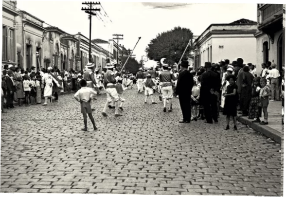
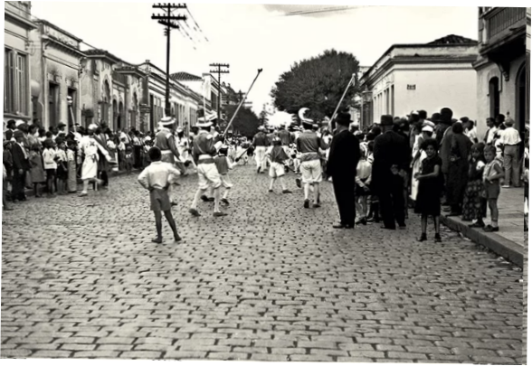
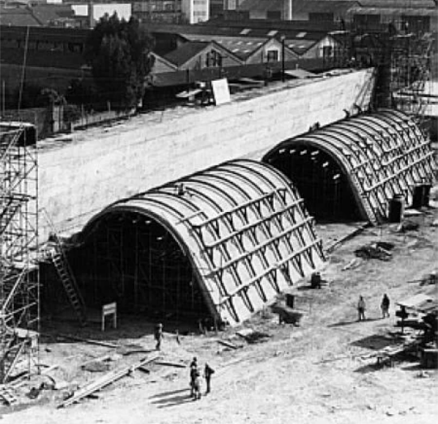

Barra Funda
O bairro repleto de história e cultura que consegue ser moderna e tradicional ao mesmo tempo, agradando diversos públicos.
Área (km²)
5,60km²
População (2010)
14.383 pessoas
Densidade Demográfica
2.568 pessoas por km²
História
Anos atrás, foi iniciada a criação de um bairro na barra do rio Tietê. Mal sabiam que se tornaria um dos bairros mais influentes de São Paulo.
Clique nos anos abaixo para saber mais:
A história se inicia no século XIX, em que o bairro era um sítio conhecido como Chácara Carvalho, que pertencia ao prefeito da cidade da época, Antônio da Silva Padro. A grande casa da chácara existe até hoje, porém, atualmente é a sede de um colégio católico da região. Ela foi projetada pelo construtor Luigi Pucci, que também desenhou o Museu do Ipiranga. Além da área do bairro, também eram considerados parte da Barra Funda a Casa Verde e a Freguesia do Ó. O loteamento e divisão da chácara marcaram o começo do desenvolvimento da Barra Funda.

O que realmente intensificou o desenvolvimento industrial do bairro foi a construção da Estrada de Ferro Sorocabana, em 1875, que tinha como principal finalidade o carregamento de café. Entretanto, A partir dos anos 20, a ferrovia passou a transportar pessoas, o que contribuiu para o desenvolvimento economico-social do bairro. Com isso, começaram a surgir armazéns e depósitos na região, o que chamou a atenção de trabalhadores e moradores. Além disso, anos depois, a estação Barra Funda da São Paulo Railway foi construída para atender as pessoas que trabalhavam nesses armazéns, também sendo importante para o crescimento demográfico do bairro.
Além disso, O bairro recebeu uma grande contribuição dos imigrantes italianos, que trouxeram, junto com as indústrias, traços de sua arquitetura e infraestrutura. Além disso, o bairro também possui influências da cultura negra, já que passaram a residir a região para trabalhar no ensacamento dos produtos produzidos pelas fábricas da área. Um dos grandes exemplos é o samba.
 

O bairro começou a ter “uma nova carinha” em 1989 com a inauguração do Terminar Intermodal da Barra Funda e do Memorial da América Latina, construído no antigo Largo da Banana, considerado o berço do samba. A partir daí, a Barra Funda vem se modernizando, mas sem perder sua essência, sempre mantendo sua história e suas influências, mas sem deixar de acompanhar as mudanças que ocorrem ao passar dos anos.
Localização
Localizada na parte central da Zona Oeste de São Paulo (SP), às margens do rio Tietê, é considerada um dos bairros mais tradicionais da capital paulista, contando com 5,6km² de área.
A região possui diversos locais culturais, restaurantes, lugares para lazer, escolas, comércio, mobilidade urbana etc. Por ter acesso à Marginal Pinheiros, a concentração de carros é grande. Mas, esse não é único jeito de chegar ao bairro. Também possui pontos e linhas de ônibus próximos ao metrô, como o Terminal Intermodal da Barra Funda, que integra metrô, trens da CPTM, transporte rodoviário e ônibus municipais e intermunicipais.